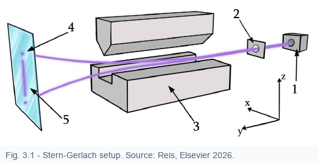

The Stern-Gerlach experiment is the physical anchor of Chapter 3. It starts like a classical force problem, but its result requires the quantum language of states, observables, probabilities and measurement.

Silver atoms leave the oven, pass through a collimator and enter a region with an inhomogeneous magnetic field. The field gradient is essential: a uniform field would mainly exert a torque on a magnetic moment, while a gradient produces a net deflecting force.
The magnetic interaction energy is approximately \(U=-\boldsymbol{\mu}\cdot\mathbf B\). A force appears when this energy changes with position. If the dominant variation is along \(z\), the useful approximation is
Classically, different orientations of \(\mu_z\) would give a continuous band of deflections. The observed pattern is instead discrete.
The original expectation was to test angular-momentum quantization. The modern interpretation is sharper: silver has one valence electron in an \(s\) state, so the orbital angular momentum is zero. The two observed beams are associated with the electron spin component.
The two spots are therefore not merely experimental details. They are the visual form of an eigenvalue problem.